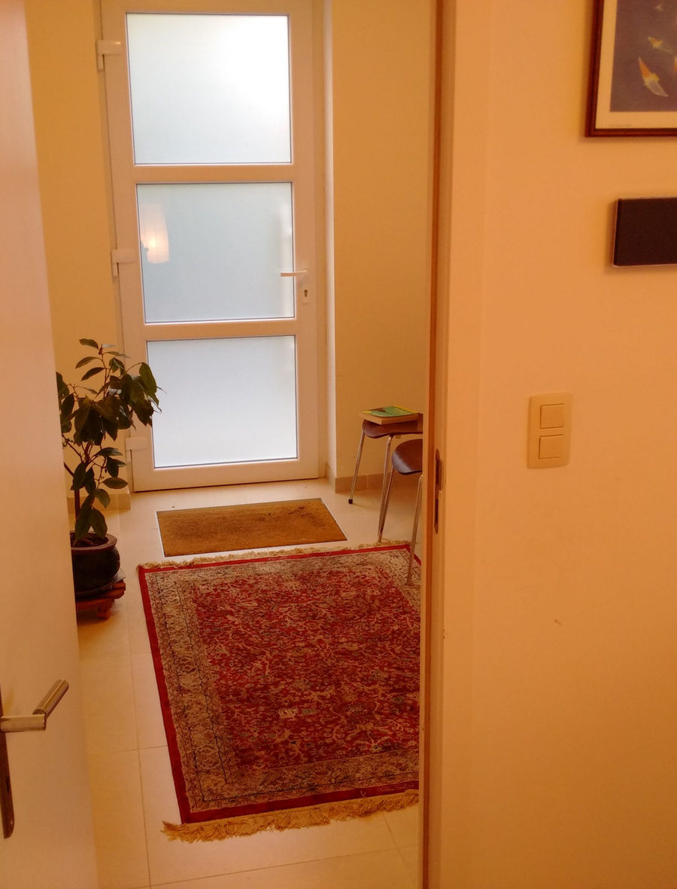

About
Dr. Anca D. Paunica-Siminea, MD
I am a psychiatrist shaped by medicine, culture and lived systems of care — and, in recent years, by the work of refining the presence I bring into the room. I see children, adolescents and adults from the international communities around Brussels.

The clinical knowledge stays in the background — presence comes first.
For many years I learned allopathic, evidence-based medicine: training in France and the United States, board certification in Adult Psychiatry and in Child and Adolescent Psychiatry by the American Board of Psychiatry and Neurology, Belgian recognition for Child and Adolescent Psychiatry, and certification by the Integrative Psychiatry Institute.
In the last few years my preoccupation has moved toward self-development and the quality of my presence in front of the patient — explorations in the tradition of Barbara Brennan's School of Healing, in vibrational medicine and in spiritual development. The quality of that presence creates a state that can induce a desire for change: an internal state of optimism that communicates itself, the way one vibration entrains another. All the clinical and medical knowledge stays in the background, in service of that.
Why psychiatry became personal
My journey began in communist Romania in the early 1980s, when a close family member was hospitalized several times. I saw first-hand both the limits of a narrow medication-only model and the real weight of psychiatric suffering on a family.
That experience stayed with me through medical school and shaped a practice that looks beyond symptoms alone: biological health, emotional life, family, culture, lifestyle and meaning all matter.
Going west, coming back east
Life took me west — toward evidence-based medicine and, for a time, toward scientific materialism. Coming back east meant integrating what the west had set aside: the spiritual dimension, vibrational medicine, soul-searching, quantum physics, interpersonal neurobiology — and the quality of presence they make possible.
This cross-cultural path is part of the practice. Nowadays patients are citizens of the world; cultural humility and cultural sensitivity are the norm, not a slogan.
The path
Four countries, one practice.
Romania
Where it began
Medical school in Romania, from 1982 to 1988, in the context of communist materialism — a regime that persecuted soul-searching, meditation-seeking people. In those years my aunt introduced me to meditation and the principles of Transcendental Meditation, gave me Krishnamurti to read, taught me to meditate and breathe, and gave me books on homeopathy and Chinese medicine.
She also took an extreme anti-allopathic path. She refused every medical investigation, and died of a benign condition — a tumor that could easily have been removed — because it was never diagnosed. After that, I committed myself to evidence-based, allopathic medicine.
France
Moving west
One year after the fall of communism, life moved west. My psychiatric training continued in France — and then in the United States.
United States
Board certification
Board certified in Adult Psychiatry and in Child and Adolescent Psychiatry by the American Board of Psychiatry and Neurology — the furthest point west, in medicine and in worldview.
Belgium · 2010
Coming back east
A personal crisis brought the decision to move back east, to Belgium — where I discovered the value of mindfulness meditation, Buddhist psychology, and the recent developments in integrating spirituality with medicine.
Integration
The synthesis
Certified by the Integrative Psychiatry Institute — evidence-based psychiatry and the spiritual dimension practiced together: psychotherapy, medication when clinically necessary, and the ongoing work of refining the quality of my presence.
Credentials
- Certification
- Integrative Psychiatry InstituteIntegrative psychiatry
- Board certification
- American Board of Psychiatry and NeurologyAdult Psychiatry · Child and Adolescent Psychiatry
- Belgian recognition
- Child and Adolescent Psychiatry
- Languages
- English, French and Romanian
Appointments
Patients are citizens of the world.
An international context is the new context of every psychiatric practice — cultural humility and cultural sensitivity are the norm here. New patients begin with an email request; existing patients use the agreed booking route.